The Executive Board
Also known as the eboard, these magnificent individuals are the elected officers that maintain ASU's operation. They meet regularly to create and plan events for the general body and all Northeastern students alike.
President - Vivian Cheng
Health Science, 2018
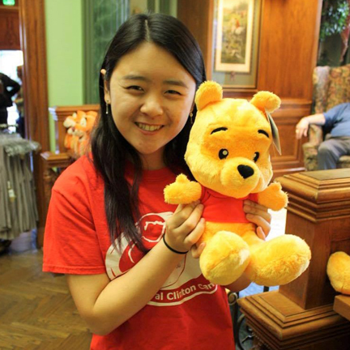Hi friends! I’m a fourth year health science student minoring in biology from Nanuet, NY. I love to watch anime, cuddle with cute plushies, canoe and go on food adventures! If you ever need a food buddy, don’t hesitate to ask me :) You might be wondering why a senior is still on Eboard... well after coming back from NUin Greece, ASU is where I met some of my closest friends and is now my second family! I really look forward to meeting you all and hope to make ASU a memorable experience this year!
Vice President - Megan Lau
Computer Science/Business, 2020
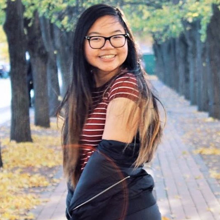Whale hello there! I’m a sophomore majoring in Computer Science and Business from New Jersey. I really like memes/puns, food adventures, and anything cute. ASU is such a fun and welcoming place for people to hangout and to learn. I’ve made many close friends in ASU and am so proud to call this club my family. My goal is to make ASU close-knit and supportive. I love making friends so if you see me around campus just say hi!
Secretary - Kelly Yokoi
International Business, 2021
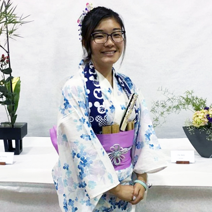Hiya! ╰( ･ ᗜ ･ )╯I’m a second-year international business student with a concentration in marketing and a minor in Japanese. I’m originally from the San Francisco Bay Area. Even though I’m far away from home, I feel like I have found a new family in ASU and hope that you will join it! My hobbies include listening to Asian pop music, eating food, chatting, and going on adventures. I’m really excited for this coming year in ASU and I hope I get to make even more wonderful memories ✧⁺⸜(●′▾‵●)⸝⁺✧
Treasurer - Anisa Anuar
Computer Science/Design, 2021
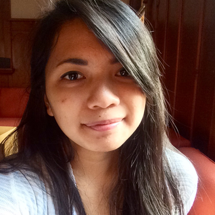Hi! I'm a second-year Computer Science and Design major and Photography minor from West Haven, Connecticut. I pass time by baking cinnamon rolls, writing about everything, painting what I find pretty, and staying up late in the Snell basement with friends. ASU was the first place where I felt a sense of belonging, and my goal as part of e-board is to help bring that sense of belonging to others. See you all soon!
Public Relations - JoJo Lee
Interaction Design, 2019
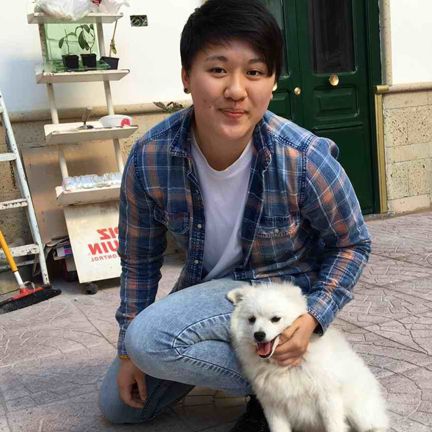Hey guys, I’m a fourth year Interaction Design major and Psychology minor from San Diego, CA. I became pretty active in ASU last year, mostly through dance, and I don’t regret a moment of it because of all the great people I was able to meet (also I can kinda pull off some decent body rolls now). In my free time I like to read, discover new music (mostly electropop and alternative rock), watch animated films, and play guitar. If you ever wanna grab some bubble tea or fight me in Pokemon SuMo, just hit me up!
Program Coordinator - Thomas Cotugno
Political Science, 2020
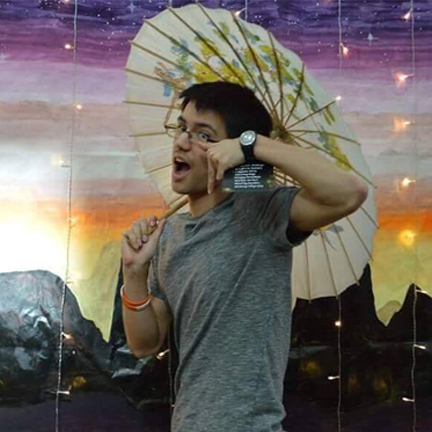Hiya! I'm a third year Political Science major, and I'm from Los Angeles (yes, the city). My favorite thing in life is a corgi, so my number one goal in life is to own one in the future and go on food adventures with it. I have been a part of ASU since my freshman ever since coming back from nuin, and it has been an absolute blast! I hope to share with everyone my love of food, corgis, and ASU!
Program Coordinator - Ryan Cheung
Political Science, 2020
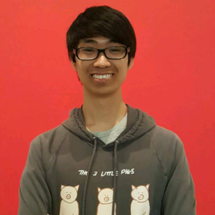Hello everybody! I'm a third year combined political science and international affairs major from Boston. I like dogs (and cats), bubble tea, and various pastries. I joined ASU in my freshmen year to make new friends and meet new people, but I got really involved in my second year through the ASU minis program (selfless plug). Come join, it'll be fun! I can't wait to meet all all you guys!
PAAC Representative - Linda Zhang
Computer Science/Biology, 2021
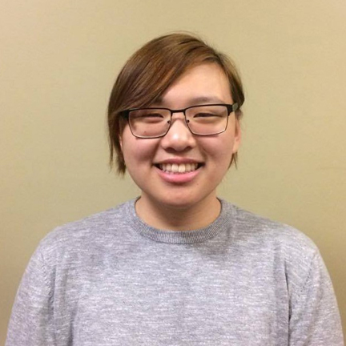Hey, I'm a second year combined computer science and biology major from Ohio (and several other places, ask me about it). In my free time I like playing video games or thinking about playing games and sleeping instead. I joined ASU my freshman year and found a welcoming home where I made a bunch of new friends. I'm excited to be on eboard and get to know you!
Dance Coordinator - Kiley Hebert
Marketing, 2019
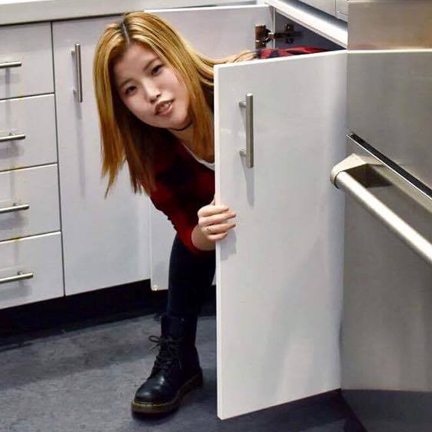Aye fam! I'm a third year marketing major/music industry minor from Wyckoff, NJ. I love dancing, sleeping, gaming, music, eating, and dogs. I'm a super outgoing person, so feel free to say hi if you see me during GMs/around campus/around Boston. ASU was the first student organization that I joined in my freshman year, so it has always held a special place in my heart. I can't wait to make more fun memories with everyone!
Freshman Representative - Jenny Yan
Undeclared, 2022
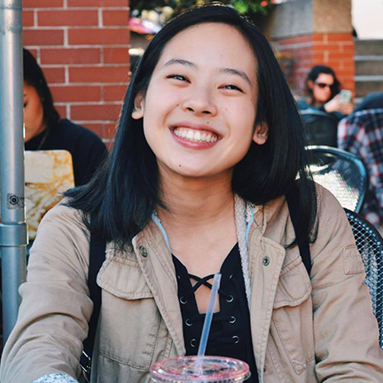Hi there! I'm a first-year undeclared major (maybe health science or behavioral neuroscience, but who really knows?), and I'm from New Jersey. I love dancing, taking pictures, listening to music (indie and alternative mostly), eating and sleeping, exploring new places, and singing off-key. ASU was one of the first student organizations I joined when I started college, and I'm so happy I did. ASU has given me the opportunity to meet so many wonderful people and has made college feel more like home. So please come join us! I'd love to get to know you! 🙂
Freshman Representative - Jingyu Song
Bioengineering, 2021
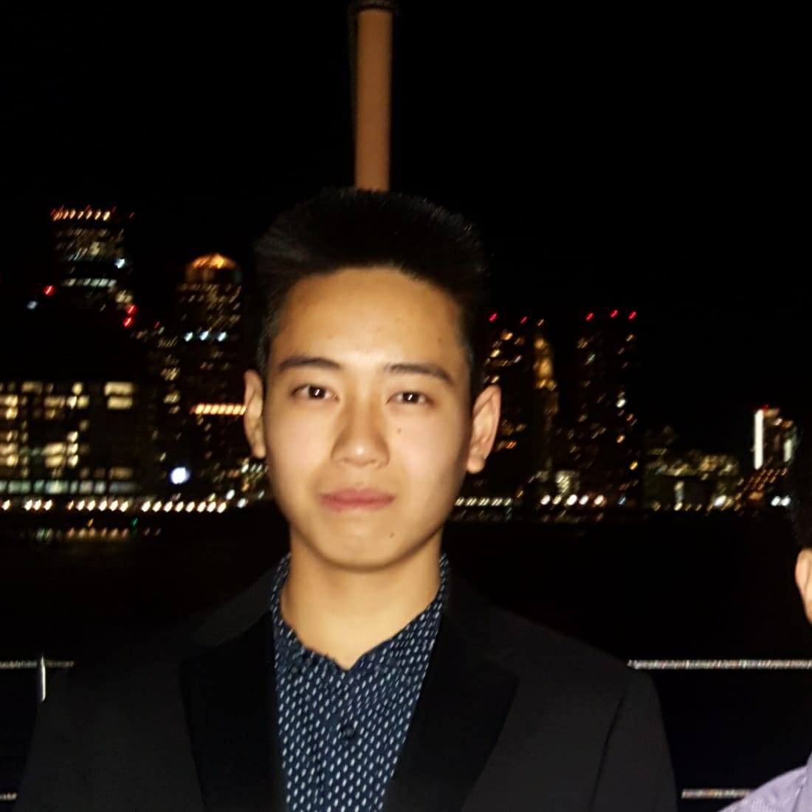Hey! I am a first year Bioengineering major from Hopewell Junction, NY. I love exploring, eating food, and just hanging out and having fun. I'm super friendly and always looking to meet new people, so if you see me on the street dont be afraid to say hi! I might be a hundred miles away from home but I never feel alone since I have met so many cool people in ASU. So come and join, I'd love to meet you all, and let me make ASU a home away from home for y'all as well.
Past Eboards
Every year, the leaders of the present pass the torch on to the aspiring individuals of tomorrow. We are forever grateful for the contributions and hard work of past eboards who have made ASU a better organization!

- 2016 - 2017
- President: Emily Tang
- Vice President: Sharon Zhu
- Secretary: Dawn Wong
- Treasurer: Steven Zhou
- Public Relations: Ethan Tang
- Co-Program Coordinators: Vivian Cheng and Brian Yeung
- Dance Coordinator: Luqi Qin
- PAAC Representative: Emily Chuang
- Freshmen Representatives: Megan Lau, Anisa Anuar

- 2015 - 2016
- President: Xida Zou
- Vice President: Christina La
- Secretary: Christina Chun
- Treasurer: Sharon Zhu
- Public Relations: Ethan Tang
- Co-Program Coordinators: Dawn Wong and Emily Tang
- PAAC Representative: Emily Miller-Mcglone
- Freshmen Representatives: Brian Yeung, Edward Wang

- 2014 - 2015
- President: Jackie Tang
- Vice President: Xida Zou
- Secretary: Christina La
- Treasurer: Chris Wan
- Public Relations: Kevin Yang
- Co-Program Coordinators: Joanne Li and Miranda Chiu
- PAAC Representative: Menaka Sangvhi
- Freshmen Representatives: Emily Tang, Michael Shen

- 2013 - 2014
- President: Stephanie Tang
- Vice President: Mabel Setow
- Secretary: Christina La
- Treasurer: Sindy Mei
- Public Relations: Kevin Huang
- Co-Program Coordinators: Jackie Tang and Xida Zou
- PAAC Representative: Deanna Wong
- Freshman Representatives: Miranda Chiu, Lauran Liang

- 2012 - 2013
- President: David Phan
- Vice President: Stephanie Tang
- Secretary: Olivia Yang
- Treasurer: Sindy Mei
- Co-Program Coordinators: Derrick Dow and Mabel Setow
- PAAC Representative: Chris Ho
- Upperclassman Rep: Deanna Wong
- Webmaster: Daniel Jin
- Freshman Reps: Alex Tang, Michael Chan, Michael Hoang

- 2011 - 2012
- President: Angel Lam
- Vice President: Cung Tran
- Treasurer: Stephanie Tang
- Secretary: Karen Chen
- Co-Program Coordinators: David Phan and Derek Hsu
- PAAC Representative: David Yung
- Webmaster: Alex Seeto

- 2010 - 2011
- President: Linda Wang
- Vice President: Edwin Leung
- Secretary: Angel Lam
- Treasurer: Christina Zheng
- Co-Program Coordinators: Karen Chen and Cung Tran
- PAAC Representative: Connie Lu
- Webmaster: David Phan
- 2009 - 2010
- President: Andy Huang
- Vice President: Linda Wang
- Secretary: Angel Lam
- Treasurer: Kalee Kite
- Co-Program Coordinators: Janet Lui and Kent Xie
- PAAC Representative: Danny Chen
- Webmaster: Thien Nguyen
- 2008-2009
- President: Jen Cheng
- Vice President: Andy Huang
- Secretary: Ranya Gebara
- Treasurer: Kalee Kite
- Program Coordinators: Tony Tang
- PAAC Representative: Linda Wang
- Webmasters: Danny Tse and Richie Huynh
- 2007 - 2008
- President: Thade Wolfe
- Vice President: Jen Cheng
- Secretary: Linda Wang
- Treasurer: Kalee Kite
- Co-Program Coordinators: Andy Huang and Tony Tang
- PAAC Representatives: Long Wu and Edwin Leung
- Webmaster: David Tith